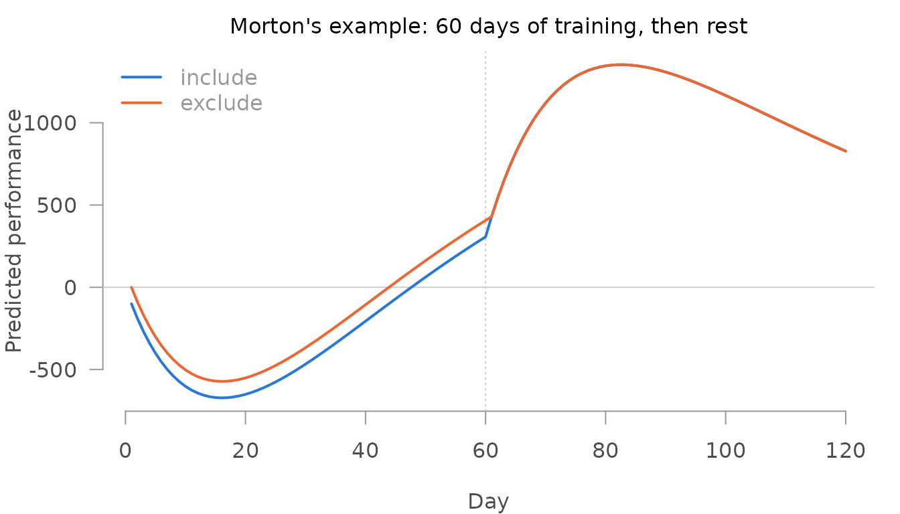
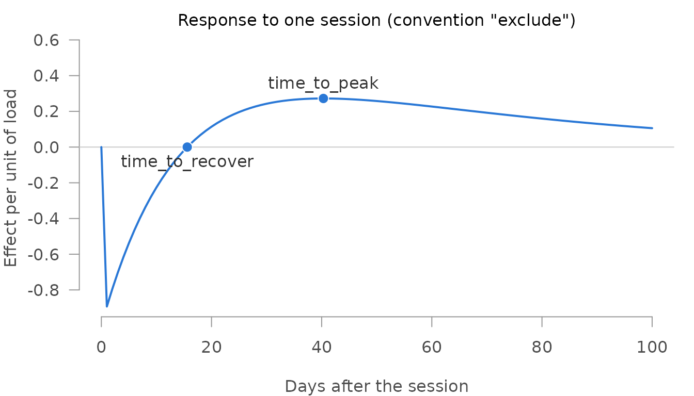

This version of the package simulates the Banister impulse-response model from parameters given by the user. It does not estimate parameters from data.
Theory
Fitness and fatigue as exponential filters
(MODELS.md, M-01). Each day
has one training load
,
the sum of its sessions. A component with time constant
(in days) accumulates the loads and forgets them exponentially. The
literature uses two discrete forms, and the package offers both through
the argument same_day_load:
- “exclude” (the default): the load of day affects performance from day , as in the R script of Busso & Chalencon (2023), It corresponds to a performance test done before that day’s training.
- “include”: the load of day counts on day at full weight, as in Morton, Fitz-Clarke & Banister (1990, Eqs. 4-5),
The two forms are related by
. They are not equivalent: the same
parameters give different numbers. The load descriptors of the package,
such as rolling_load(), default to “include”; the
impulse-response models default to “exclude”.
The half-life of a component,
,
is the number of days it takes to fall to half. Functions take time
constants; printed output shows the half-life next to each one
(half_life(), time_constant()).
The initial state is 0 by default and can be set by the user. Under both conventions it adds to day .
Two-component model (MODELS.md, M-02; Morton et al. 1990). Fitness (time constant ) and fatigue (time constant ) are two filters of the same loads, and predicted performance is
with baseline and gains , . Fatigue usually has the larger gain and the shorter time constant: training lowers performance at first and raises it later.
Fitness-only model (MODELS.md, M-03; as printed in Marchal et al. 2025). Without the fatigue component,
Response to a single session (MODELS.md, M-05). The effect on performance days after one unit of load is
When
and
the effect is negative at first, turns positive after
time_to_recover days and is largest after
time_to_peak days (Clarke & Skiba 2013; Busso &
Chalencon 2023, Eqs. 12-13):
These times do not depend on the timing convention; only the effect
on the day of the session does
(
under “include”, 0 under “exclude”). They are NA when they
do not exist: time_to_recover when
,
time_to_peak when
,
and both when
,
when
or for the fitness-only model. In Busso & Chalencon (2023),
alternative parameter sets with a similar fit gave small, although
statistically significant, differences in the response to a session; the
authors recommend characterising an athlete by that response rather than
by each parameter taken individually.
Computation
Morton’s example
Morton et al. (1990, Figs. 3-4) train at a load of 100 every day for 60 days and then stop, with , , and , no baseline and the convention “include”.
x <- as_daily_load(
data.frame(date = as.Date("2026-01-01") + 0:119,
load = c(rep(100, 60), rep(0, 60))),
date = "date", load = "load"
)
inc <- simulate_banister(x, k1 = 1, tau1 = 45, k2 = 2, tau2 = 15,
same_day_load = "include")
inc
#> <banister_sim> Banister model simulation: two-component model
#> Timing convention: same_day_load = "include" (a day's load counts on the same day)
#> Parameters: p0 = 0, k1 = 1, k2 = 2
#> Time constants: tau1 = 45 days (half-life 31.19 days), tau2 = 15 days (half-life 10.4 days)
#> Initial state: fitness 0, fatigue 0
#> Nothing is fitted: values are simulated from the parameters given.
#>
#> athlete date load fitness fatigue predicted
#> 1 1 2026-01-01 100 100.0000 100.0000 -100.0000
#> 2 1 2026-01-02 100 197.8023 193.5507 -189.2991
#> 3 1 2026-01-03 100 293.4552 281.0680 -268.6809
#> 4 1 2026-01-04 100 387.0059 362.9411 -338.8764
#> 5 1 2026-01-05 100 478.5006 439.5339 -400.5673
#> 6 1 2026-01-06 100 567.9845 511.1871 -454.3896
#> 7 1 2026-01-07 100 655.5018 578.2191 -500.9363
#> 8 1 2026-01-08 100 741.0958 640.9280 -540.7602
#> 9 1 2026-01-09 100 824.8086 699.5926 -574.3766
#> 10 1 2026-01-10 100 906.6817 754.4738 -602.2658
#> # ... 110 more rowsThe values agree with the published ones (MODELS.md, M-02):
p <- inc$predicted
data.frame(
quantity = c("k1 g(60)", "k2 h(60)", "Day of minimum",
"p(47)", "p(48)", "Day of peak after stopping",
"Peak after stopping"),
published = c("3,351", "3,044", "16", "about day 47", "",
"83", "about 1,353"),
package = c(inc$fitness[60], 2 * inc$fatigue[60], which.min(p),
p[47], p[48], 60 + which.max(p[61:120]), max(p[61:120]))
)
#> quantity published package
#> 1 k1 g(60) 3,351 3350.769391
#> 2 k2 h(60) 3,044 3044.312199
#> 3 Day of minimum 16 16.000000
#> 4 p(47) about day 47 -16.955450
#> 5 p(48) 9.518813
#> 6 Day of peak after stopping 83 83.000000
#> 7 Peak after stopping about 1,353 1352.879264Performance falls during the first 16 days, returns to baseline between days 47 and 48, and peaks 23 days after training stops. Under the default convention “exclude” the curve is shifted: each day misses its own load.
exc <- simulate_banister(x, k1 = 1, tau1 = 45, k2 = 2, tau2 = 15)
c(include = inc$predicted[60], exclude = exc$predicted[60])
#> include exclude
#> 306.4572 406.4572
constant_training() gives the same curve in closed form,
the asymptote of performance if training never stops, and the day of
poorest performance. The asymptote depends on the convention; the day of
the minimum does not.
constant_training(100, k1 = 1, tau1 = 45, k2 = 2, tau2 = 15,
same_day_load = "include")
#> <constant_training> Constant daily training of 100: two-component model
#> Timing convention: same_day_load = "include" (a day's load counts on the same day)
#> Parameters: p0 = 0, k1 = 1, k2 = 2
#> Time constants: tau1 = 45 days (half-life 31.19 days), tau2 = 15 days (half-life 10.4 days)
#> Asymptote of predicted performance: 1449.07
#> Time of minimum: 16.09 days
#> Curve: days 1 to 100 in $curve.
constant_training(100, k1 = 1, tau1 = 45, k2 = 2, tau2 = 15)$asymptote
#> [1] 1549.074Response to a single session
With Morton’s parameters, one session lowers performance for about 16 days and raises it most after about 40 days:
r <- session_response(k1 = 1, tau1 = 45, k2 = 2, tau2 = 15, days = 100)
r
#> <session_response> Response to a single session: two-component model
#> Timing convention: same_day_load = "exclude" (a day's load affects performance from the next day)
#> Parameters: k1 = 1, k2 = 2
#> Time constants: tau1 = 45 days (half-life 31.19 days), tau2 = 15 days (half-life 10.4 days)
#> Time to recover: 15.6 days
#> Time to peak: 40.31 days (effect 0.2722 per unit of load)
#> Curve: days 0 to 100 in $curve; day 0 is the day of the session.
The fit of Clarke & Skiba (2013, Fig. 8B) gives times of about 12 and 40 days:
session_response(k1 = 0.18258, tau1 = 35.821, k2 = 0.23016, tau2 = 21.340)
#> <session_response> Response to a single session: two-component model
#> Timing convention: same_day_load = "exclude" (a day's load affects performance from the next day)
#> Parameters: k1 = 0.1826, k2 = 0.2302
#> Time constants: tau1 = 35.82 days (half-life 24.83 days), tau2 = 21.34 days (half-life 14.79 days)
#> Time to recover: 12.22 days
#> Time to peak: 39.57 days (effect 0.02446 per unit of load)
#> Curve: days 0 to 60 in $curve; day 0 is the day of the session.Limitations
- Parameters are strongly correlated and several parameter sets fit the same data almost equally well (Busso & Chalencon 2023; Vermeire et al. 2022).
- Estimates from local optimisers depend on the starting values (Vermeire et al. 2022).
- Adding the fatigue component improved fit but not prediction in two datasets (Marchal et al. 2025).
- With 56 to 104 performance tests per swimmer, the mean of the model was 0.29, and the mean absolute percentage error of its predictions was 2.0% and 2.7% in two validation sets (Busso & Chalencon 2023).
- The positive effect is linear in training load. The model therefore cannot represent maladaptation to overtraining, and an optimal training load before a taper cannot be searched with it (Busso & Chalencon 2023). Optimising the model without constraints gives maximal training followed by rest (Ceddia et al. 2025, preprint).
- Training is reduced to one number per day, parameters are constant in time, and the initial state is assumed.
- The two timing conventions give different numbers; gains obtained under one are not comparable with the other.
- This version only simulates: it does not estimate parameters from data.
References
Busso T, Chalencon S (2023). Validity and accuracy of impulse-response models for modeling and predicting training effects on performance of swimmers. Medicine & Science in Sports & Exercise, 55(7), 1274-1285.
Ceddia D, Bondell H, Taylor P (2025). Mathematical modelling and optimisation of athletic performance: tapering and periodisation. arXiv:2505.20859 (preprint).
Clarke DC, Skiba PF (2013). Rationale and resources for teaching the mathematical modeling of athletic training and performance. Advances in Physiology Education, 37, 134-152.
Marchal A, Benazieb O, Weldegebriel Y, Méline T, Imbach F (2025). Statistical flaws of the fitness-fatigue sports performance prediction model. Scientific Reports, 15, 3706.
Morton RH, Fitz-Clarke JR, Banister EW (1990). Modeling human performance in running. Journal of Applied Physiology, 69(3), 1171-1177.
Vermeire K, Ghijs M, Bourgois JG, Boone J (2022). The fitness-fatigue model: what’s in the numbers? International Journal of Sports Physiology and Performance, 17, 810-813.